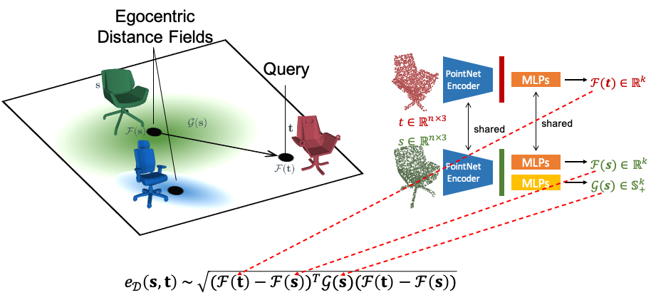
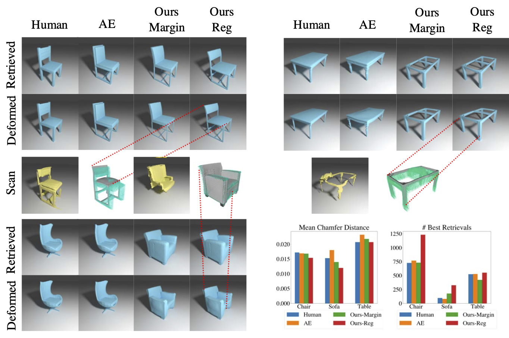
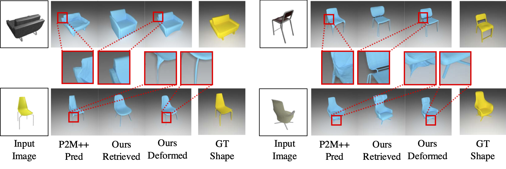

European Conference on Computer Vision (ECCV), 2020

Deformation-Aware Embedding Space: This figure shows an overview of 1) the design of our deformation-aware embedding space using source-dependent egocentric distance fields, 2) siamese network architecture, and 3) formulation of the asymmetric embedding distance.
Abstract
We introduce a new problem of retrieving 3D models that are deformable to a given query shape and present a novel deep deformation-aware embedding to solve this retrieval task. 3D model retrieval is a fundamental operation for recovering a clean and complete 3D model from a noisy and partial 3D scan. However, given a finite collection of 3D shapes, even the closest model to a query may not be satisfactory. This motivates us to apply 3D model deformation techniques to adapt the retrieved model so as to better fit the query. Yet, certain restrictions are enforced in most 3D deformation techniques to preserve important features of the original model that prevent a perfect fitting of the deformed model to the query. This gap between the deformed model and the query induces asymmetric relationships among the models, which cannot be handled by typical metric learning techniques. Thus, to retrieve the best models for fitting, we propose a novel deep embedding approach that learns the asymmetric relationships by leveraging location-dependent egocentric distance fields. We also propose two strategies for training the embedding network. We demonstrate that both of these approaches outperform other baselines in our experiments with both synthetic and real data.
Visualization of retrieval followed by deformation on ShapeNet. Our network is able to retrieve models
that better fit after deformation despite having large geometric distances initially. Notice the big back part of the retrieved chair and the thick seat of the retrieved sofa, attributes that are not identical to the query. Yet, these parts properly fit the target after deformation. Our network is also able to retrieve a sofa with legs and a car with a trunk that are present in the desired targets. Moreover, our deformation-aware retrieval & deformation approach also allows us to preserve fine-details of the source model post-deformation as shown in the zoomed in regions.

(Top row and bottom left) Qualitative results of Scan-to-CAD. (Bottom right) Quantitative Results: We compare different retrieval methods on the Scan2CAD dataset. The left chart shows the mean fitting errors and the right chart shows the number of best candidates retrieved by different methods. Ours-Reg achieves the minimum overall fitting errors and the maximum number of best retrievals among all categories compared with other methods.

Qualitative results to show the feasibility of our approach for the Image-toCAD application. We show one of three input viewpoints used by Pixel2Mesh++ to produce their coarse mesh. We use this to retrieve a CAD model, which is then
deformed to fit the coarse mesh. Rigidity constraints ensure the quality of our output
as shown.
Citation
@inproceedings{uy-deformawareretrieval-eccv20,
title = {Deformation-Aware 3D Model Embedding and Retrival},
author = {Mikaela Angelina Uy and Jingwei Huang and Minhyuk Sung and Tolga Birdal and Leonidas Guibas},
booktitle = {European Conference on Computer Vision (ECCV)},
year = {2020}
}
Acknowledgements
This work is supported by a Google AR/VR University Research
Award, a Vannevar Bush Faculty Fellowship, a grant from the Stanford SAIL Toyota
Research Center, and gifts from the Adobe Corporation and the Dassault Foundation.